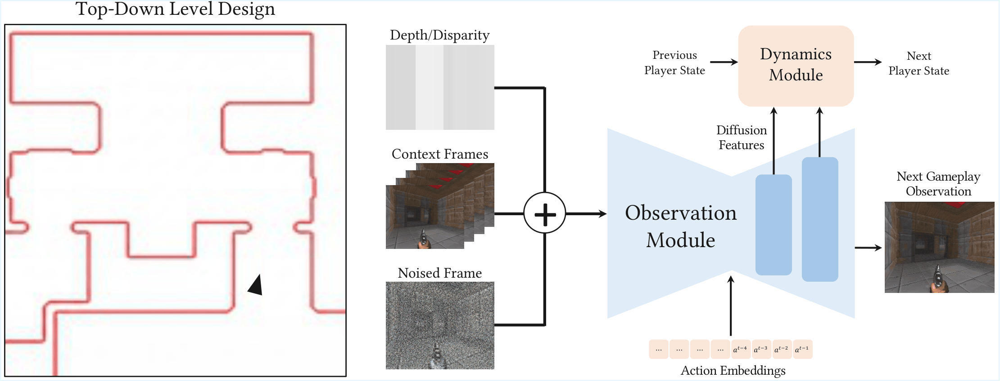
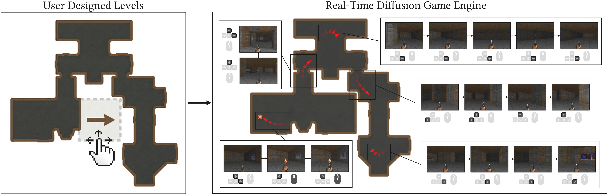
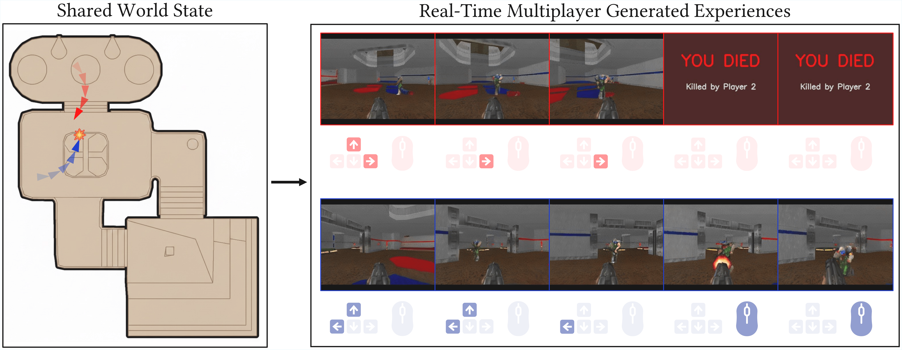

Video world models have shown immense promise for interactive simulation and entertainment, but current systems still struggle with two important aspects of interactivity: user control over the environment for reproducible, editable experiences, and shared inference where players hold influence over a common world. To address these limitations, we introduce an explicit external memory into the system, a persistent state operating independent of the model's context window, that is continually updated by user actions and queried throughout the generation roll-out. Unlike conventional diffusion game engines that operate as next-frame predictors, our approach decomposes generation into Memory, Observation, and Dynamics modules. This design gives users direct, editable control over environment structure via an editable memory representation, and it naturally extends to real-time multiplayer rollouts with coherent viewpoints and consistent cross-player interactions.

We introduce an explicit external memory and factor the diffusion game engine into three modules: Memory (map geometry and pose), Observation (next-frame generation conditioned on history and memory readouts), and Dynamics (pose update for state progression). The memory module maintains a persistent state including the minimap and agent states. The observation module generates the next visual observation conditioned on the memory readout and recent history. The dynamics module updates state given actions and observations. This separation makes long-horizon structure easier to maintain and, critically, enables multiplayer in a natural way: multiple agents act on the same shared memory, and the model can render coherent observations from one or more viewpoints with interaction effects between players.

A primary advantage of an external memory is that it provides a direct handle for modifying the underlying structure of the world. By defining the world explicitly with coarse map structures, users can directly influence the structure of the environment before inference even begins. Users define a level through coarse 2D geometry. During inference, the diffusion model generates first-person observations consistent with the top-down level layout.
The external memory not only enables editability of the environment, it also naturally extends to act as a shared state that multiple agents can condition on and update during generated roll-outs. In our multiplayer setting, the shared world state is represented explicitly by the external memory: the static map layout together with the set of active player poses. Generation is distributed: each player runs their own copy of the Observation and Dynamics modules, while all players read from and write to the same shared memory. This distributed design supports an arbitrary number of players without changing the model interface, and runs at approximately 20 FPS for real-time interactive multiplayer experiences.

Our method naturally supports an arbitrary number of players without requiring any architectural changes. Because each player runs their own Observation and Dynamics modules while sharing a common external memory, adding more players simply means running additional instances that read from and write to the same shared state. Furthermore, our method can sustain real-time multiplayer gameplay for extremely long time horizons. Below we show a timelapse of 30 minutes of 4-player gameplay, demonstrating the stability and consistency of our approach over extended play sessions.
@misc{po2025multigen,
title={MultiGen: Level-Design for Editable Multiplayer Worlds in Diffusion Game Engines},
author={Ryan Po and David Junhao Zhang and Amir Hertz and Gordon Wetzstein and Neal Wadhwa and Nataniel Ruiz},
year={2025},
archivePrefix={arXiv},
primaryClass={cs.CV}
}